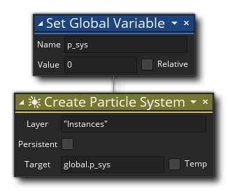

Descripción
Esta acción iniciará el sistema de partículas listo para que usted pueda crear y usar tipos de partículas y emisores con él. Usted asigna el nombre de la capa como una cadena, por ejemplo, "Capa de partículas" (que debe existir en el editor de sala), y luego marca el sistema como persistente o no. Si el sistema está marcado como Persistente, se mantendrá en todas las salas después de que se haya creado, y se le asignará una capa administrada si la capa inicial no existe en las salas subsiguientes. Si la persistencia no está marcada, el sistema se destruirá automáticamente al final de la sala donde se creó, al igual que cualquier emisor asociado con el sistema. Si desea eliminar manualmente el sistema de la memoria, debe usar la acción Destruir sistema de partículas.
También debe proporcionar una variable objetivo que contendrá el valor único de identificación del sistema de partículas. Este valor de ID es lo que se usará en otras funciones para establecer las propiedades del sistema o para indicarle a GameMaker Studio 2 qué sistema usar al crear partículas. Puede elegir marcar esta variable como una variable local temporal, pero eso significará que se descarta al final de la secuencia de comandos de acción o evento, lo que significa que el sistema seguirá existiendo pero sin ningún medio para acceder a él, por lo que se debe tener cuidado al usar esto (en general, los sistemas nunca necesitarán almacenarse en una variable local temporal, pero para ciertas cosas, como extraer partículas a una superficie, puede ser necesario).
NOTA: Un sistema de partículas persistentes, una vez creado, permanece residente en la memoria del sistema durante todo el juego, por lo que si necesita recrearlo en cualquier punto (por ejemplo, si llama a la acción Restart Game ), entonces debe destruir el sistema actual primero; de lo contrario, se produce una pérdida de memoria. Una pérdida de memoria ocurre cuando un recurso se agrega a la memoria y luego se "desreferencia", lo que significa que GameMaker Studio 2 ya no tiene forma de interactuar con ese recurso. Esto lleva a que la memoria esté obstruida por recursos inaccesibles que a su vez pueden causar problemas con su juego. Para destruir un sistema de partículas persistentes cuando ya no es necesario, use la acción Destruir sistema de partículas.
Sintaxis de acción:

Argumentos:
Argumento Descripción Render Depth La profundidad para establecer el sistema de partículas Target La variable de destino para mantener el valor de ID exclusivo del sistema creado
Ejemplo:
El código de bloque de acción anterior crea una variable global, luego crea un nuevo sistema de partículas y asigna su valor ID único a la variable global.